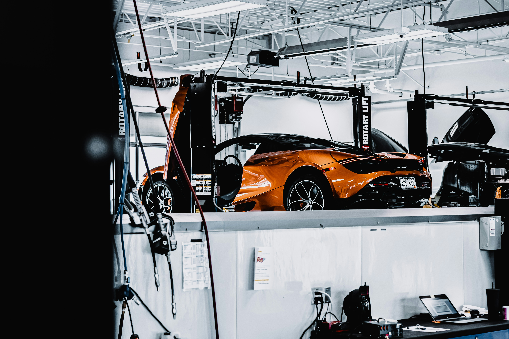

About M5X Mechanix | Fullerton, CA
A better shop experience starts with straight answers.
M5X Mechanix is an enthusiast-led automotive service shop built around thoughtful diagnostics, quality work, and practical recommendations for drivers who want to understand what their car needs.
Schedule Service
The working standard
Good repairs begin with a careful look.
Whether you are dealing with a warning light, cooling issue, suspension noise, leak, or a car you are thinking about buying, the first step is understanding what is really happening.
BMW is our specialty, but the standard applies to every make: inspect carefully, communicate clearly, and recommend work that makes sense for the car and the driver.
Why drivers come back
A shop relationship built on trust.
Clear diagnostics
We verify the concern, explain what we find, and separate urgent repairs from work that can wait.
Enthusiast knowledge
BMW experience helps us recognize common patterns while still treating every vehicle as its own case.
Work with care
From routine maintenance to a deeper repair, the goal is a car that leaves the shop better than it arrived.


Shop Hours
Here when your car needs attention.
Stop by during shop hours or send a service request before you arrive. For larger repairs and diagnostics, scheduling ahead helps us give your car the time it deserves.
Ready to get started?
Send the year, make, model, and what needs attention. We will follow up with next steps.